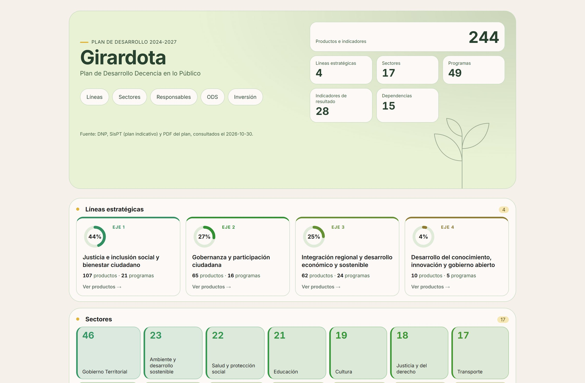
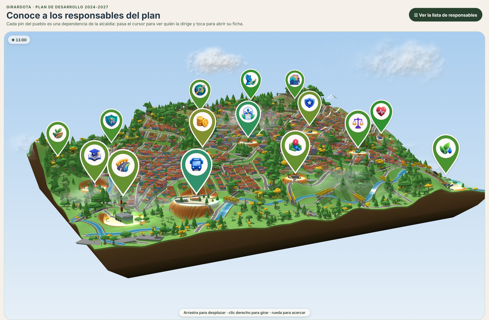
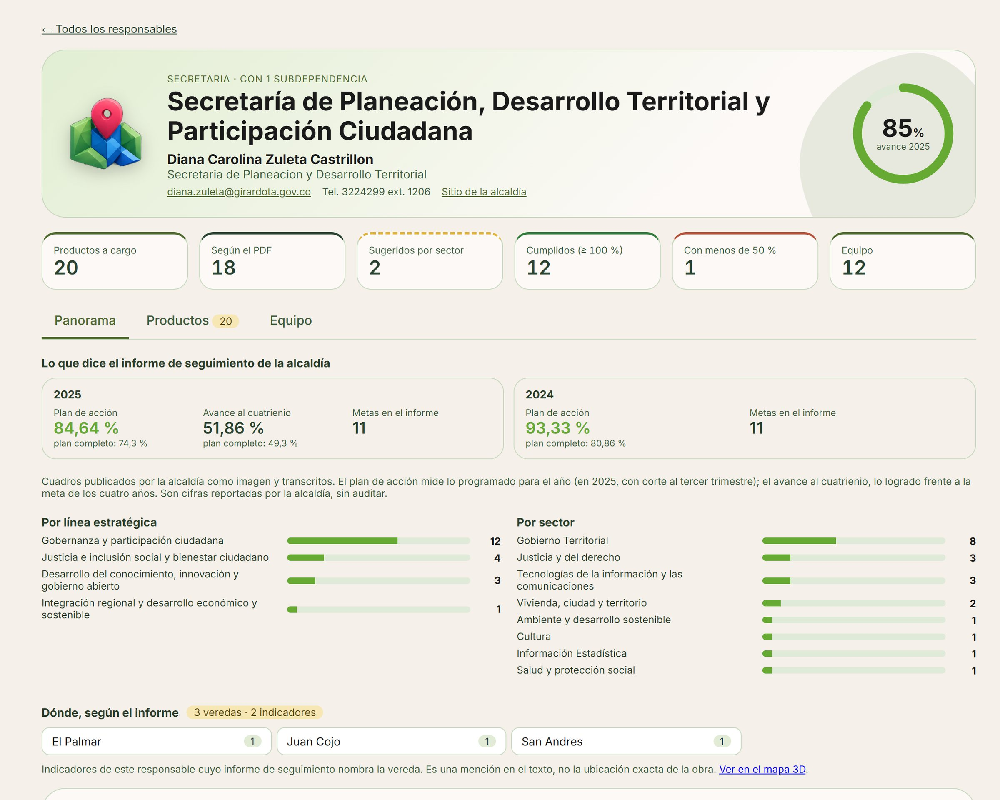
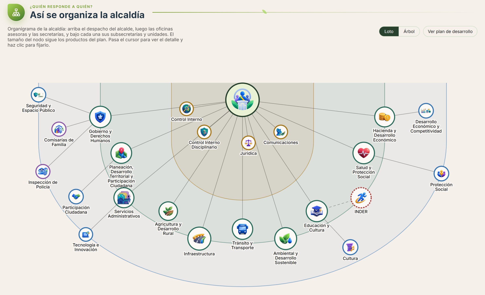
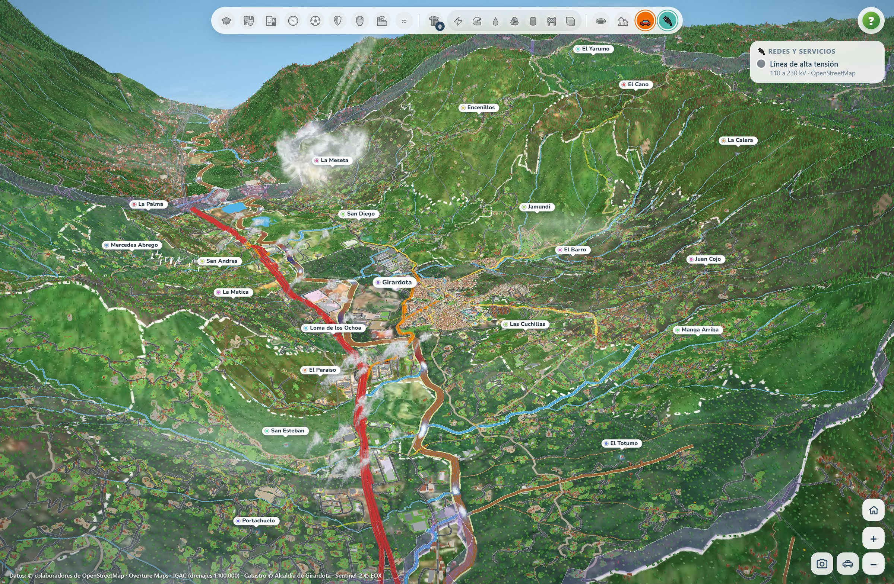

Una herramienta para ver, en un solo lugar, qué se prometió, quién responde por cada meta y dónde ocurre en el municipio. Ya funciona con información real de Girardota.
Las líneas estratégicas, los sectores, los programas y cada producto del plan están en una sola vista, con su avance según los informes de seguimiento de la Alcaldía.

Fuente: DNP, SisPT (plan indicativo) y PDF oficial del plan, consultados el 30 de octubre de 2026.
Las secretarías aparecen como pines sobre un modelo 3D del casco urbano. Al tocar un pin se abre la ficha de esa dependencia con quién la dirige, qué productos tiene a cargo y cómo avanzan.

Pueblo 3D hecho con el catastro de Girardota. La representación es ilustrativa y no tiene valor catastral.
Esta es la ficha de la Secretaría de Planeación, Desarrollo Territorial y Participación Ciudadana: 20 productos a cargo, el avance que reportan los informes de 2024 y 2025, y en qué veredas se menciona cada indicador.

Fuente: informes de seguimiento publicados por la Alcaldía (cifras reportadas, sin auditar) y directorio de girardota.gov.co.
El organigrama muestra el despacho del alcalde, las oficinas asesoras, las secretarías y sus subsecretarías. El tamaño de cada nodo depende de cuántos productos del plan tiene a cargo.

Estructura según el directorio de dependencias de girardota.gov.co y los responsables que asigna el plan.
El mapa 3D reúne el relieve, las veredas, las vías, los ríos, las redes de servicios y el catastro. Encima se pueden activar capas como el tráfico estimado por vía, con la Autopista Norte y el peaje El Trapiche, y las proyecciones de población.

Datos: OpenStreetMap, Overture Maps, IGAC, Catastro de la Alcaldía de Girardota y Sentinel-2. El tráfico es una estimación del modelo, no un aforo.
El plan, sus metas y su avance están ya organizados para preparar la gestión y la rendición de cuentas.
Cada secretaría ve lo que le toca y lo que les toca a las demás, con la misma información.
El avance del plan se muestra sobre el territorio, en un formato cercano para la comunidad.
Las cifras de avance provienen de los informes de seguimiento publicados por la Alcaldía y se presentan como fueron reportadas. Los modelos 3D son ilustrativos y no tienen valor catastral. Cada dato de la herramienta indica su fuente.